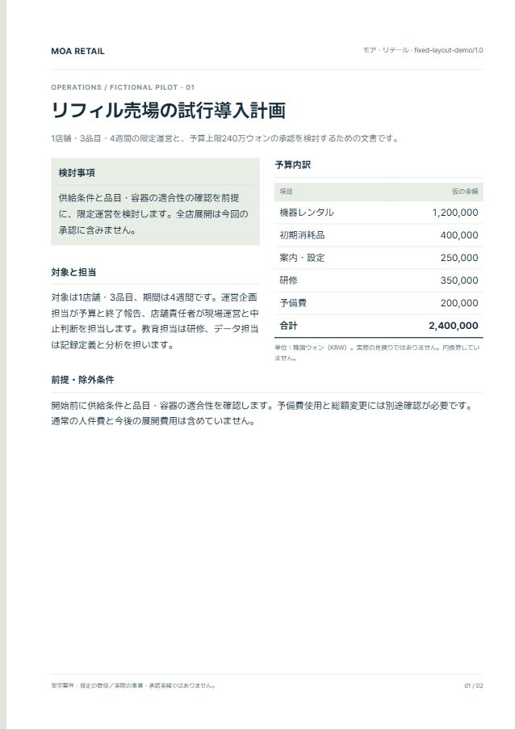
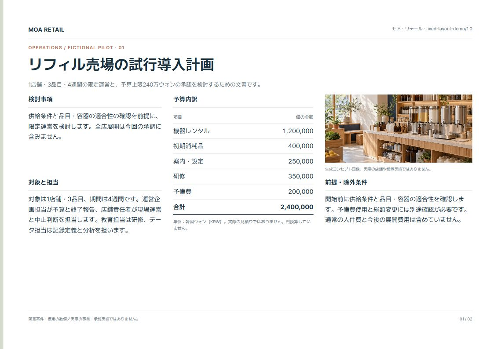

AIが変わっても、
会社の文書基準を
次の仕事へ。
用語、文体、確認項目。
毎回伝えている会社の基準を、
次の文書にも引き継げるでしょうか。
Document Studioは、人が確認した基準を
AIの資料作成につなぐ、オープンソースの実験です。
登録不要 · インストール不要 · 実験段階のalpha版
リフィル売場
4週間の試行導入
企画提案書
小さな運営で確かめることと、
次の段階で検討すること

最初に決めたルールを、
別のページ・言語にも。
同じ本文・数値を3つの様式で比較します。
様式ごとの規則を先に定め、
ページや訳文が変わっても維持します。
 01 / A4 MONOCHROME
01 / A4 MONOCHROME完全な白黒A4
黒・白のみ／画像なし
余白18mm・本文11pt・数値右揃え

02 / ALIGNED REPORT基準線をそろえた報告書
2列・列間6mm／限定パレット
余白18mm・本文11pt・数値右揃え

03 / VISUAL PROPOSAL横型のビジュアル提案
本文・表と参考画像を分離
余白15mm・本文11pt・限定パレット
日本語を標準に、同じ様式で韓国語へ。
見た目の違いに加え、固定した用紙・余白・文字・色・数値整列を画面で測定できます。
この例の静的HTMLに対する確認であり、AIの生成試験や遵守率の評価ではありません。
3つの規則は、この比較用に事前定義したデモの制作基準です。実在企業が承認したCompany Packではありません。内容・費用・目標は架空の案件に対する仮定です。
同じ案件を、
目的の異なる3つの文書に。
承認を求めるとき、計画を具体化するとき、
現場で手順を確認するとき。
読み手の判断と行動に合わせて構成を変えています。
架空案件 企業名・数値・目標は説明用です。金額は韓国ウォン（KRW）。作成済みの文書例を表示しており、このサイトでAIは実行しません。
共通して守る基準と、
目的に応じて変える構成。
すべての配置を固定する前に、
組織として残すべき判断を整理します。
用語・文体・検討状態の一貫性
3つの文書で、試行導入の範囲と予算を維持しています。提案、仮定、未確認の事項を区別し、担当者と承認に含めない範囲も明記しました。
これは画面の例に用いた制作基準です。実際の社内資料を分析して承認したCompany Packではありません。
- 01 読み手の判断から構成
- 提案書は根拠、決裁サマリーは承認範囲、ガイドは実行手順を前に置きます。
- 02 仮定と確認済みの事実を区別
- 仮の数値や提案基準を、達成実績や確定した社内方針として扱いません。
- 03 内容に合う表現の選択
- 数値はグラフ、順序は手順図、時期と責任は実行計画で説明します。
一度確認した基準を、
次の仕事の出発点に。
Document Studioは、既存のPDF・PPTXから文体やデザインの特徴を分析し、人が確認したルールをCompany Packで管理する仕組みを提供します。
このページの文書例は構成の可能性を示すものです。自動分析の精度や組織全体の生産性向上を実証した結果ではありません。
- 01
参考資料からルールを提案
利用権限のある資料から、文体・デザインの特徴と根拠を整理します。
- 02
人が確認し、承認
用語、文体、ブランド方針、確認項目を選び、Company Packに残します。
- 03
新しい依頼に合わせて作成
承認済みの基準を参照し、読み手と目的に合う構成・表現を計画します。
小さな仕事を1件、
自分の環境で確認。
ソースと導入手順をGitHubで公開しています。
導入後は、下の依頼例から試せます。
架空の小売企業の運営責任者が検討する、4週間の試行導入の企画提案書を、日本語のHTMLで作成してください。
1店舗・3品目・予算上限240万ウォン（KRW）という仮定を維持してください。
費用内訳、担当者、週別の計画、成功基準と中止条件を含めてください。
仮定と実際に確認した事実を区別し、実施した確認と未確認の範囲を示してください。
現在の実装範囲と、確認が必要な点
実験段階のスキル・スクリプト集です。実際の執筆、フォント、ブラウザー確認、編集可能なPPTXへの変換には、それぞれの実行環境が必要です。
社内の非公開資料を用いた配布は開発中の範囲です。公開エクスポーターはprivate/restricted資料から作成したCompany Packをブロックします。このデモは、モデル間の同一品質や組織全体の生産性改善を検証していません。
管理者向けガイドで現在の状態を確認 ↗AIを業務につなぐ方法を、
使いながら考え、記録します。
この方向に関心があれば、GitHubのStarで保存してください。
試した結果や限界も、次の実験につながる手がかりになります。